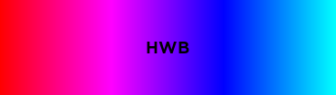
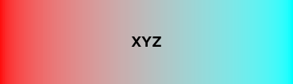

Color
Constructors¶
Color.new¶
Color.new(r: number, g: number, b: number): Color
Standard Color constructor. Arguments should be in the range [0, 1], similar to Color3.new.
Color.random¶
Color.random(): Color
Creates a Color with random RGB components.
Color.gray¶
Color.gray(scale: number): Color
Creates an achromatic Color using the scale, which should be in the range [0, 1]. 0 corresponds to black, and 1 corresponds to white.
Color.named¶
Color.named(name: string): Color
Creates a Color based on a named CSS color. Names are case-insensitive.
Color.from¶
Color.from(colorType: string, ...: any): Color
Creates a Color from various color types. See the Color Types section for the list of available conversions and what arguments they require.
Info
You can also use an alternative constructor using Color.from[ColorType] (e.g. Color.fromColor3(...) instead of Color.from("Color3", ...)), except for the xyY color type.
Properties¶
Color.R¶
Color.R: number
The clipped red RGB channel of the color, in the range [0, 1].
Color.G¶
Color.G: number
The clipped green RGB channel of the color, in the range [0, 1].
Color.B¶
Color.B: number
The clipped blue RGB channel of the color, in the range [0, 1].
Functions¶
Color.isAColor¶
Color.isAColor(color: any): boolean
Returns whether the provided value is a Color. Checks if the value is a table with the following properties:
- The table is frozen
- The table has keys
R,G,B,__r,__g,__bwith numeric values - The table has a
tofunction
Color.isClipped¶
Color.isClipped(color: Color): boolean
Returns whether the Color's RGB components are clipped. Some conversions (e.g. XYZ to sRGB) may result in RGB components outside of the range [0, 1]. In this case, the components will be clipped to the range [0, 1].
print(Color.new(1, 1, 1):isClipped()) --> false
print(Color.new(2, 2, 2):isClipped()) --> true
Color.unclippedEq¶
Color.unclippedEq(refColor: Color, testColor: Color): boolean
Compares the unclipped components of the Colors for equality.
print(Color.new(1, 1, 1) == Color.new(2, 2, 2)) --> true
print(Color.new(1, 1, 1):unclippedEq(Color.new(2, 2, 2))) --> false
Color.components¶
Color.components(color: Color, unclipped: boolean? = false): (number, number, number)
Returns the RGB components of the Color, either clipped or unclipped.
You can also access the individual clipped components using Color.R, Color.G, and Color.B.
Color.to¶
Color.to(color: Color, colorType: string): ...any
Converts a Color to different formats. See the Color Types section for the list of available conversions and what values they output.
Info
You can also use an alternative converter using Color.to[ColorType], e.g. Color:toColor3() instead of Color:to("Color3").
Color.invert¶
Color.invert(color: Color): Color
Returns a Color with inverted RGB components.
Color.mix¶
Color.mix(startColor: Color, endColor: Color, ratio: number, mode: string? = "RGB", hueAdjustment: string? = "Shorter"): Color
Interpolates the start and end Colors in various color spaces. ratio should be in the range [0, 1]. Supported spaces are: RGB (default), CMYK, HSB (or HSV), HWB, HSL, Lab, Luv, LChab (or LCh), LChuv, xyY, and XYZ (XYZ interpolation can be used for linear RGB interpolation).
For color spaces with a hue component (e.g. HSB/L or LCh), there are different ways to interpolate the hue, and you can specify how it should be done by passing hueAdjustment: Shorter (default), Longer, Increasing, Decreasing, or Specified. These adjustments correspond to those specified in CSS Color Module Level 4.
Here are images of what the various interpolations look like, using red and aqua as example colors (with the default hue adjustment):





Color.blend¶
Color.blend(backgroundColor: Color, foregroundColor: Color, mode: string): Color
Blends the background and foreground Colors in various modes. The available blending modes are: Normal, Multiply, Screen, Overlay, Darken, Lighten, ColorDodge, ColorBurn, HardLight, SoftLight, Difference, and Exclusion. The blending modes correspond to those specified in Compositing and Blending Level 1.
Color.deltaE¶
Color.deltaE(refColor: Color, testColor: Color, kL: number? = 1, kC: number? = 1, kH: number? = 1): number
Calculates the color difference of two Colors using CIEDE2000, which can be used to compare the similarity (or difference) between colors. Smaller numbers correspond to greater similarity, while larger numbers correspond to less similarity.
Color.luminance¶
Color.luminance(color: Color): number
Returns the relative luminance of the Color.
Color.contrast¶
Color.contrast(refColor: Color, testColor: Color): number
Returns the contrast ratio between two Colors.
Color.bestContrastingColor¶
Color.bestContrastingColor(refColor: Color, ...: Color): (Color, number)
Returns the Color with the highest contrast ratio to the reference color, along with the contrast ratio itself.
Color.brighten¶
Color.brighten(color: Color, amount: number? = 1): Color
Brightens a Color by modifying its L* component.
Color.darken¶
Color.darken(color: Color, amount: number? = 1): Color
Equivalent to Color.brighten(color, -amount).
Color.saturate¶
Color.saturate(color: Color, amount: number? = 1): Color
Saturates a Color by modifying its C* component.
Color.desaturate¶
Color.desaturate(color: Color, amount: number? = 1): Color
Equivalent to Color.saturate(color, -amount).
Color.harmonies¶
Color.harmonies(color: Color, harmony: string, analogyAngle: number? = 60): array<Color>
Generates a list of Colors with a certain HSB harmony to the reference Color. The available harmonies are: Analogous, Complementary, SplitComplementary, Triadic, Tetradic (sometimes known as rectangle), and Square.
You may also specify an angle for the Analogous, SplitComplementary, and Tetradic harmonies.
Math Operations¶
Color == Color¶
Comparing Colors with == returns whether their clipped RGB components are the same.
print(Color.new(0, 0, 0) == Color.new(0, 0, 0)) --> true
print(Color.new(0, 0, 0) == Color.new(1, 1, 1)) --> false
print(Color.new(1, 1, 1) == Color.new(2, 2, 2)) --> true
Color Types¶
BrickColor¶
color: BrickColor
Color3¶
color: Color3
Hex¶
hex: string
The hex string can be in the format ABC or AABBCC, with or without a leading #.
Number¶
color: number[0, 16777215]
RGB¶
r: number[0, 255]g: number[0, 255]b: number[0, 255]
HSB¶
h: number[0, 360) or NaNs: number[0, 1]b: number[0, 1]
For an explanation on HSB, you can read the Wikipedia article on it.
HSV¶
Alias for HSB
HWB¶
h: number[0, 360) or NaNw: number[0, 1]b: number[0, 1]
For an explanation on HWB, you can read the Wikipedia article on it.
HSL¶
h: number[0, 360) or NaNs: number[0, 1]l: number[0, 1]
For an explanation on HSL, you can read the Wikipedia article on it.
CMYK¶
c: number[0, 1]m: number[0, 1]y: number[0, 1]k: number[0, 1]
For an explanation on CMYK, you can read the Wikipedia article on it. The RGB-CMYK conversions are naive and do not take color profiles into account.
Temperature¶
kelvin: number
For best results, use temperatures in the range [1000, 40000]. The RGB-Temperature conversions are on based on Neil Bartlett's color-temperature.
XYZ¶
x: number[0, 1] (typical)y: number[0, 1]z: number[0, 1] (typical)
For an explanation on XYZ, you can read the Wikipedia article on it. The RGB-XYZ conversions use illuminant D65.
xyY¶
x: number[0, 1]y: number[0, 1]Y: number[0, 1]
xyY is a color space related to XYZ.
Lab¶
l: number[0, 1]a: number[-1.28, 1.27] (typically)b: number[-1.28, 1.27] (typically)
For an explanation on CIELAB, you can read the Wikipedia article on it.
LChab¶
l: number[0, 1]c: number[0, 1.50] (typically)h: number[0, 360)
LCh(ab) is the cylindrical model of CIELAB.
LCh¶
Alias for LChab
Luv¶
l: number[0, 1]u: number[-1, 1] (typically)v: number[-1, 1] (typically)
For an explanation on CIELUV, you can read the Wikipedia article on it.
LChuv¶
l: number[0, 1]c: number[0, 1.50] (typically)h: number[0, 360)
LCh(uv) is the cylindrical model of CIELUV.